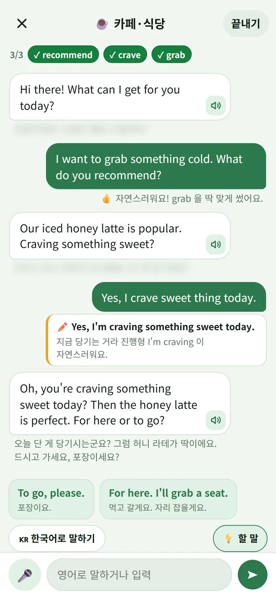
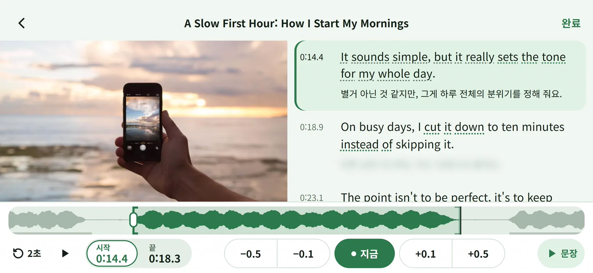
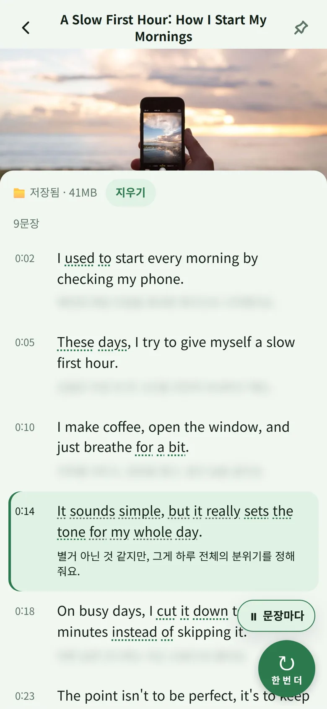
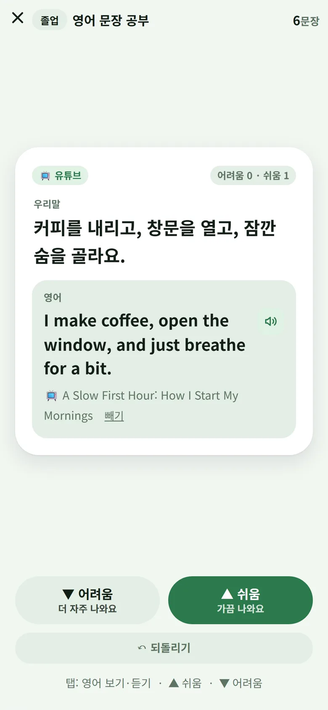
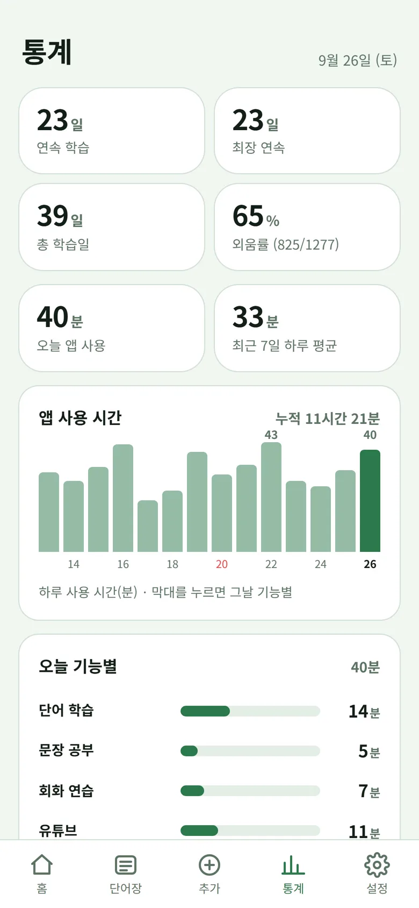
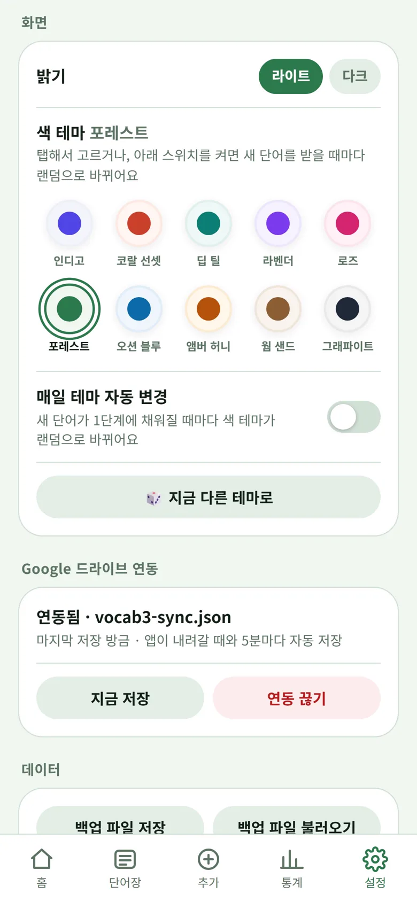
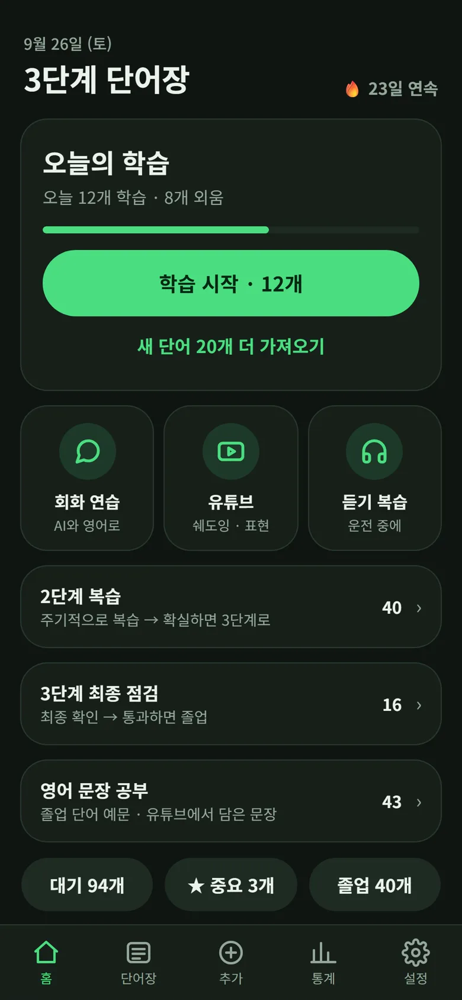

AI와 상황극으로 말해요
카페, 회의, 여행 같은 상황을 고르면 AI가 상대역을 맡아요. 틀린 문장은 한 줄로 고쳐 줘요.

가수 박진영이 소개한 단어장 세 권 공부법에서 출발했어요. 확실히 외운 단어만 다음 칸으로 가요.
매일 새 단어가 채워져요. 뜻과 예문을 떠올린 뒤, 외웠으면 위로 밀어요.
주기적으로 다시 봐요. 헷갈리면 1단계로 되돌려요.
마지막 점검이에요. 예문까지 말할 수 있으면 통과예요.
졸업한 단어의 예문은 영어 문장 공부로 이어져요.
링크를 붙여 넣으면 Gemini가 영상을 듣고 영어 문장을 시간순으로 정리해요. 해석은 가려 둬요.
I used to start every morning by checking my phone.
예전엔 매일 아침을 휴대폰 확인으로 시작했어요.
These days, I try to give myself a slow first hour.
요즘은 아침 첫 한 시간을 천천히 보내려고 해요.
I make coffee, open the window, and just breathe for a bit.
커피를 내리고, 창문을 열고, 잠깐 숨을 골라요.
It sounds simple, but it really sets the tone for my whole day.
별거 아닌 것 같지만, 그게 하루 전체의 분위기를 정해 줘요.


영상을 폰에 받아 두면 인터넷 없이 쉐도잉해요. 안드로이드 13 이상에서 돼요.
가로 화면에서 문장의 시작과 끝을 0.1초씩 고쳐요. 받아 둔 영상은 소리 파형도 보여요.
카페, 회의, 여행 같은 상황을 고르면 AI가 상대역을 맡아요. 틀린 문장은 한 줄로 고쳐 줘요.

졸업한 단어의 예문과 유튜브에서 담은 문장이 한글로 먼저 나와요. 어려운 문장일수록 자주 나와요.

단어, 예문, 해석을 차례로 읽어 줘요. 운전하거나 걸을 때 좋아요.
연속 학습일과 외움률, 날마다 쓴 시간까지 한눈에 봐요.

드라이브 파일 하나에 학습 기록을 자동 저장해요. Gemini 키는 올리지 않아요.

앱을 열면 GitHub에서 새 버전을 확인하고, 누르면 받아서 바로 설치해요.
마음에 드는 색을 고르거나, 새 단어가 채워질 때마다 바뀌게 둬요.

회화, 유튜브 정리, AI 예문은 설정에 넣은 내 키로만 써요. 키는 폰에만 있고 백업에도 안 들어가요.
단어, 진도, 유튜브 정리 모두 기기에 저장돼요. 드라이브 연동은 직접 켤 때만 써요.
GitHub에서 코드를 볼 수 있어요. 소스는 MIT, 배포 APK는 GPL-3.0-or-later 조건이에요.
개인 학습용으로 만들었어요. 판매나 유료 서비스에 쓰지 말아 달라는 부탁이에요. 라이선스 조건은 아니에요.
Play 스토어 대신 GitHub 릴리스에서 받아요. 안드로이드 7.0 이상이면 돼요.
버튼을 누르면 최신 APK를 받아요.
처음 한 번은 브라우저에 ‘출처를 알 수 없는 앱’ 설치를 허용해요.
기본 단어 200개가 들어 있어요. 오늘의 20개부터 시작해요.
Obtainium을 쓴다면 github.com/Seobuk/vocab3을 추가해 업데이트를 받아도 돼요.